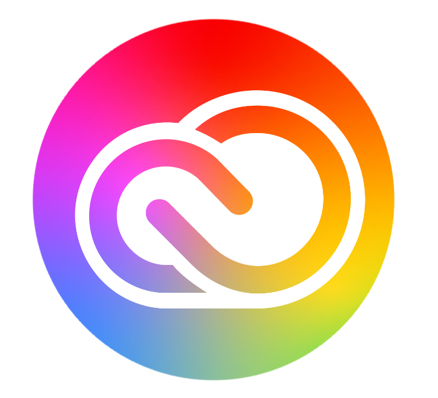

Education
Drexel University, Philadelphia, PA
B.S in User Experience and Interaction Design
Sept '20 - June '25
Cumulative GPA: 3.84
Skills


- Adobe Suite
- Photoshop
- Premiere
- Audition
- After Effects
- Lightroom/Bridge
- Illustrator
- Microsoft Suite
- Figma
- Invision Studio
- Miro
- HTML
- CSS
- Javascript
- Digital Photography
- Creative Writing
- Public Speaking
- Critical Thinking
- Conducted independent studies on users of the desktop website MusicandArts.com
- Used research to redesign the homepage into a layout that is simpler to navigate and suited to the user’s needs
- Used research to redesign the rental page into concise content featuring a searchable database
- Conducted independent studies on users of the website Polygon.com
- Used research to redesign the homepage into organized news categories
- Used research to redesign the news article appearance into a layout that is pleasing to the eye and functional for the user
- Researched the brand OpenTable and considered a rebrand of the mobile app
- Redesigned the process of scheduling a restaurant reservation through the app
- Implemented creative micro-interactions within the app
- Collaborated with a team to create a business concept for a company that organizes unique pop-up galleries in Philidelphia
- Researched competition, demographics, and interest in the field of art
- Constructed a business plan and marketing strategies to establish brand identity
- Member, Girl Scouts of Central Maryland, 2009-2020
- Member, Drexel CHI UX Club, 2020-Present
- Member, Drexel Nutritional Association, 2021-Present
- Member, Drexel EcoReps, 2021-Present
Technical
Additional
Projects
Music & Arts Redesign (September - December 2020)
Polygon Redesign (September - December 2020)
OpenTable Rebrand/Redesign (April - June 2021)
ArtNow Business Development (September - December 2021)
Coursework
Design For Media I/II
Interaction Design
User Interface Design I/II
Human-Computer Interaction
Product Design
Web Design I/II